CODING AGENTS AS PIXEL WORLD MODELS
traex/DeepSeek-V4.1-Flash · 0171
点击播放 · 原生 RGB 像素
逐轮保存的候选
回放视频、检查图与代码变化。
每份候选均可单独播放。实际图片检查记录在下方工具轨迹中。
候选 01播放与检查图
点击播放 · 原生 RGB 像素

展开代码变化
--- 上一保存版本
+++ 本次保存版本
@@ -0,0 +1,243 @@
+from pathlib import Path
+
+import cv2
+import numpy as np
+from PIL import Image, ImageDraw, ImageFilter
+
+import artifact_io
+
+
+CASE_DIR = Path(__file__).resolve().parent
+WIDTH, HEIGHT, FRAME_COUNT, FPS = 256, 144, 20, 4
+
+
+def basket_mask(source):
+ """Silhouette of the moving basket, lid, and chain."""
+ mask = np.zeros((HEIGHT, WIDTH), np.uint8)
+
+ body = np.array(
+ [
+ [67, 50], [136, 50], [139, 55], [141, 64], [142, 75],
+ [142, 87], [141, 101], [139, 113], [134, 120], [128, 123],
+ [82, 123], [71, 121], [64, 117], [61, 109], [59, 98],
+ [59, 85], [60, 72], [63, 58],
+ ],
+ np.int32,
+ )
+ cv2.fillPoly(mask, [body], 255)
+
+ # The chrome lid and hanging ring are part of the moving assembly.
+ cv2.ellipse(mask, (107, 50), (20, 9), 0, 0, 360, 255, -1)
+ cv2.ellipse(mask, (104, 36), (8, 8), 0, 0, 360, 255, -1)
+
+ # Keep the chain but replace its short cord section with a new attached cord.
+ chain_region = np.zeros_like(mask)
+ chain_region[14:46, 96:113] = 255
+ rgb = source.astype(np.int16)
+ dark = rgb.mean(axis=2) < 126
+ orange = (rgb[:, :, 0] > rgb[:, :, 1] + 18) & (rgb[:, :, 0] > rgb[:, :, 2] + 20)
+ chain = (dark | orange).astype(np.uint8) * 255
+ chain = cv2.dilate(chain, np.ones((2, 2), np.uint8), iterations=1)
+ mask = np.maximum(mask, cv2.bitwise_and(chain, chain_region))
+
+ # A light feather removes the stair-stepped silhouette without washing it out.
+ alpha = cv2.GaussianBlur(mask.astype(np.float32) / 255.0, (0, 0), 0.38)
+ alpha[mask > 0] = np.maximum(alpha[mask > 0], 0.78)
+ alpha[mask == 0] = np.minimum(alpha[mask == 0], 0.18)
+ return np.clip(alpha, 0.0, 1.0)
+
+
+def reconstruct_background(source, mask):
+ """Fill the basket's footprint with table and wall texture."""
+ solid = (mask > 0.35).astype(np.uint8) * 255
+ solid = cv2.dilate(solid, np.ones((3, 3), np.uint8), iterations=1)
+ bgr = cv2.cvtColor(source, cv2.COLOR_RGB2BGR)
+ filled = cv2.inpaint(bgr, solid, 9, cv2.INPAINT_TELEA)
+ background = cv2.cvtColor(filled, cv2.COLOR_BGR2RGB).astype(np.float32)
+
+ # Continue the nearby wood grain into the hidden tabletop. The copy is shifted
+ # down and right so its perspective line matches the target location.
+ target = np.zeros((HEIGHT, WIDTH), np.float32)
+ for x in range(48, 151):
+ horizon = int(round(54.0 + 0.102 * x))
+ target[horizon + 2 : 132, x] = 1.0
+ target *= cv2.GaussianBlur(solid.astype(np.float32) / 255.0, (0, 0), 2.2)
+
+ patch = np.empty_like(background)
+ for y in range(HEIGHT):
+ source_y = min(HEIGHT - 1, y + 11)
+ for x in range(WIDTH):
+ patch[y, x] = source[source_y, min(WIDTH - 1, x + 105)]
+
+ # Texture only needs to be strong in the center; feather the replacement
+ # into the inpainted fill so there is no visible rectangular boundary.
+ alpha = cv2.GaussianBlur(target, (0, 0), 1.8)[..., None]
+ background = background * (1.0 - alpha) + patch.astype(np.float32) * alpha
+
+ # Fine grain hides the smooth character of the inpainted center.
+ yy, xx = np.mgrid[0:HEIGHT, 0:WIDTH]
+ grain = (
+ 1.15 * np.sin(xx * 0.18 + yy * 0.61)
+ + 0.8 * np.sin(xx * 0.071 - yy * 0.31)
+ + 0.5 * np.sin(xx * 0.41 + yy * 0.13)
+ )
+ grain *= cv2.GaussianBlur(solid.astype(np.float32) / 255.0, (0, 0), 4.0)
+ background += grain[..., None]
+ return np.clip(background, 0, 255).astype(np.uint8)
+
+
+def add_soft_shadow(canvas, center, axes, opacity, blur):
+ shadow = Image.new("L", (WIDTH, HEIGHT), 0)
+ draw = ImageDraw.Draw(shadow)
+ cx, cy = center
+ ax, ay = axes
+ draw.ellipse((cx - ax, cy - ay, cx + ax, cy + ay), fill=opacity)
+ shadow = shadow.filter(ImageFilter.GaussianBlur(blur))
+
+ tint = Image.new("RGB", (WIDTH, HEIGHT), (54, 34, 20))
+ canvas.paste(tint, (0, 0), shadow)
+
+
+def render_ball():
+ """Anti-aliased shaded orange tennis ball on a transparent patch."""
+ scale = 4
+ size = 42
+ cx = cy = size * scale / 2.0
+ radius = 13.5 * scale
+ yy, xx = np.mgrid[0 : size * scale, 0 : size * scale].astype(np.float32)
+ nx = (xx + 0.5 - cx) / radius
+ ny = (yy + 0.5 - cy) / radius
+ rr = nx * nx + ny * ny
+ inside = rr <= 1.0
+ nz = np.sqrt(np.clip(1.0 - rr, 0.0, 1.0))
+
+ light = np.array([-0.42, -0.62, 0.66], np.float32)
+ light /= np.linalg.norm(light)
+ diffuse = np.clip(nx * light[0] + ny * light[1] + nz * light[2], 0.0, 1.0)
+ half_x, half_y, half_z = -0.25, -0.36, 0.90
+ half_len = np.sqrt(half_x**2 + half_y**2 + half_z**2)
+ specular = np.clip(
+ (nx * half_x + ny * half_y + nz * half_z) / half_len, 0.0, 1.0
+ ) ** 24
+
+ base = np.array([235.0, 119.0, 28.0])
+ shade = 0.38 + 0.78 * diffuse
+ color = base[None, None, :] * shade[..., None]
+ color += 58.0 * specular[..., None]
+
+ # The surface is fuzzy rather than glossy; use tiny chromatic variation.
+ fuzz = 2.6 * np.sin(xx * 1.91 + yy * 1.37) + 1.4 * np.sin(xx * 3.13 - yy * 2.27)
+ color += fuzz[..., None]
+
+ # Two shallow curved seams, following the sphere's lighting.
+ angle = np.deg2rad(28.0)
+ u = np.cos(angle) * nx + np.sin(angle) * ny
+ v = -np.sin(angle) * nx + np.cos(angle) * ny
+ seam_a = np.abs(v - (-0.31 + 0.13 * np.sin(3.1 * u + 0.5)))
+ seam_b = np.abs(v - (0.43 + 0.11 * np.sin(3.0 * u - 1.2)))
+ seam = (seam_a < 0.052) | (seam_b < 0.046)
+ seam_color = np.array([239.0, 225.0, 192.0])
+ seam_shade = (0.55 + 0.58 * diffuse)[..., None]
+ color[seam] = seam_color[None, :] * seam_shade[seam]
+
+ edge_alpha = np.clip((1.0 - np.sqrt(rr)) * radius * 0.65, 0.0, 1.0)
+ alpha = (inside * edge_alpha * 255).astype(np.uint8)
+ rgba = np.dstack([np.clip(color, 0, 255).astype(np.uint8), alpha])
+ patch = Image.fromarray(rgba, "RGBA").resize((size, size), Image.Resampling.LANCZOS)
+ return patch
+
+
+def draw_cord(canvas, end_y):
+ """Draw the orange suspension cord above the moving chain."""
+ if end_y <= 0:
+ return
+ end = min(HEIGHT, int(round(end_y)))
+ draw = ImageDraw.Draw(canvas)
+ draw.line((100, 0, 100, end), fill=(89, 38, 13), width=1)
+ draw.line((101, 0, 101, end), fill=(154, 62, 14), width=2)
+ draw.line((103, 0, 103, end), fill=(205, 91, 22), width=1)
+ # Sparse woven highlights keep the cord from looking like a flat stripe.
+ for y in range(1, end, 5):
+ draw.point((102, y), fill=(226, 121, 44))
+
+
+def lift_offset(t):
+ """Brief hold, smooth acceleration, then a steady upward lift."""
+ hold = 0.25
+ acceleration_end = 1.0
+ acceleration = 48.0
+ velocity = 32.0
+ if t <= hold:
+ return 0.0
+ if t <= acceleration_end:
+ dt = t - hold
+ return 0.5 * acceleration * dt * dt
+ at_end = 0.5 * acceleration * (acceleration_end - hold) ** 2
+ return at_end + velocity * (t - acceleration_end)
+
+
+def composite_assembly(background, source, alpha, offset):
+ """Move the photographed basket and chain while keeping the cord attached."""
+ canvas = Image.fromarray(background)
+ dy = int(round(offset))
+ cord_end = 14 + offset
+ draw_cord(canvas, cord_end)
+
+ crop_top = 14
+ source_crop = source[crop_top:].astype(np.uint8)
+ alpha_crop = alpha[crop_top:]
+ layer = Image.fromarray(
+ np.dstack([source_crop, np.rint(alpha_crop * 255).astype(np.uint8)]), "RGBA"
+ )
+ canvas.paste(layer, (0, crop_top + dy), layer)
+ return canvas
+
+
+def make_frames(source):
+ alpha = basket_mask(source)
+ background = reconstruct_background(source, alpha)
+ ball = render_ball()
+ frames = []
+
+ for index in range(FRAME_COUNT):
+ if index == 0:
+ frames.append(source.copy())
+ continue
+
+ t = index / FPS
+ dy = lift_offset(t)
+ canvas = Image.fromarray(background.copy())
+
+ # The basket shadow softens and fades as it leaves the table.
+ shadow_strength = int(62 * np.clip(1.0 - dy / 92.0, 0.0, 1.0))
+ if shadow_strength:
+ add_soft_shadow(
+ canvas,
+ (103, 121 + int(dy * 0.10)),
+ (31 + int(dy * 0.10), 6),
+ shadow_strength,
+ 2.8 + dy * 0.025,
+ )
+
+ # The ball sits on the table throughout; the basket occludes it.
+ ball_shadow = Image.new("L", (WIDTH, HEIGHT), 0)
+ ball_draw = ImageDraw.Draw(ball_shadow)
+ ball_draw.ellipse((88, 115, 122, 124), fill=118)
+ ball_shadow = ball_shadow.filter(ImageFilter.GaussianBlur(2.2))
+ canvas.paste(Image.new("RGB", (WIDTH, HEIGHT), (55, 34, 18)), (0, 0), ball_shadow)
+ canvas.paste(ball, (83, 84), ball)
+
+ canvas = composite_assembly(np.asarray(canvas), source, alpha, dy)
+ frames.append(np.asarray(canvas, dtype=np.uint8))
+
+ return np.stack(frames, axis=0)
+
+
+def main():
+ source = np.asarray(Image.open(CASE_DIR / "first_frame.png").convert("RGB"), dtype=np.uint8)
+ frames = make_frames(source)
+ artifact_io.save(frames, CASE_DIR)
+
+
+if __name__ == "__main__":
+ main()
候选 02播放与检查图
点击播放 · 原生 RGB 像素
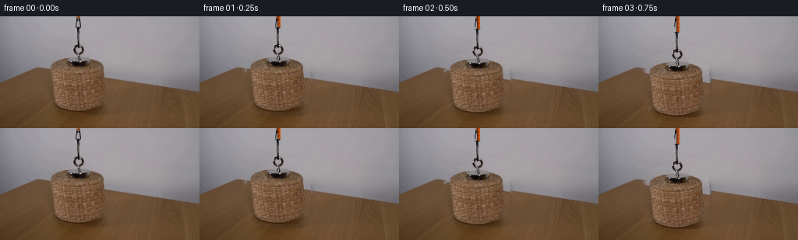
展开代码变化
--- 上一保存版本
+++ 本次保存版本
@@ -64,10 +64,12 @@
target *= cv2.GaussianBlur(solid.astype(np.float32) / 255.0, (0, 0), 2.2)
patch = np.empty_like(background)
+ clean = np.clip(filled, 0, 255).astype(np.uint8)
+ clean = cv2.cvtColor(clean, cv2.COLOR_BGR2RGB)
for y in range(HEIGHT):
source_y = min(HEIGHT - 1, y + 11)
for x in range(WIDTH):
- patch[y, x] = source[source_y, min(WIDTH - 1, x + 105)]
+ patch[y, x] = clean[source_y, min(WIDTH - 1, x + 105)]
# Texture only needs to be strong in the center; feather the replacement
# into the inpainted fill so there is no visible rectangular boundary.
候选 03播放与检查图
点击播放 · 原生 RGB 像素

展开代码变化
--- 上一保存版本
+++ 本次保存版本
@@ -207,18 +207,18 @@
continue
t = index / FPS
- dy = lift_offset(t)
+ lift = lift_offset(t)
canvas = Image.fromarray(background.copy())
# The basket shadow softens and fades as it leaves the table.
- shadow_strength = int(62 * np.clip(1.0 - dy / 92.0, 0.0, 1.0))
+ shadow_strength = int(62 * np.clip(1.0 - lift / 92.0, 0.0, 1.0))
if shadow_strength:
add_soft_shadow(
canvas,
- (103, 121 + int(dy * 0.10)),
- (31 + int(dy * 0.10), 6),
+ (103, 121 - int(lift * 0.05)),
+ (31 + int(lift * 0.10), 6 + int(lift * 0.03)),
shadow_strength,
- 2.8 + dy * 0.025,
+ 2.8 + lift * 0.025,
)
# The ball sits on the table throughout; the basket occludes it.
@@ -229,7 +229,7 @@
canvas.paste(Image.new("RGB", (WIDTH, HEIGHT), (55, 34, 18)), (0, 0), ball_shadow)
canvas.paste(ball, (83, 84), ball)
- canvas = composite_assembly(np.asarray(canvas), source, alpha, dy)
+ canvas = composite_assembly(np.asarray(canvas), source, alpha, -lift)
frames.append(np.asarray(canvas, dtype=np.uint8))
return np.stack(frames, axis=0)
候选 04播放与检查图

候选 05播放与检查图
点击播放 · 原生 RGB 像素

展开代码变化
--- 上一保存版本
+++ 本次保存版本
@@ -145,7 +145,7 @@
edge_alpha = np.clip((1.0 - np.sqrt(rr)) * radius * 0.65, 0.0, 1.0)
alpha = (inside * edge_alpha * 255).astype(np.uint8)
rgba = np.dstack([np.clip(color, 0, 255).astype(np.uint8), alpha])
- patch = Image.fromarray(rgba, "RGBA").resize((size, size), Image.Resampling.LANCZOS)
+ patch = Image.fromarray(rgba).resize((size, size), Image.Resampling.LANCZOS)
return patch
@@ -189,7 +189,7 @@
source_crop = source[crop_top:].astype(np.uint8)
alpha_crop = alpha[crop_top:]
layer = Image.fromarray(
- np.dstack([source_crop, np.rint(alpha_crop * 255).astype(np.uint8)]), "RGBA"
+ np.dstack([source_crop, np.rint(alpha_crop * 255).astype(np.uint8)])
)
canvas.paste(layer, (0, crop_top + dy), layer)
return canvas
可观测工具轨迹
实际执行的命令与返回图片。
命令 1exit 0
/bin/bash -c "pwd && rg --files -g '"'!*__pycache__*'"' | sed -n '1,120p'"
命令 2exit 0
/bin/bash -c 'cat prompt.txt'
命令 3exit 0
/bin/bash -c 'cat GENERATION_RULES.md'
命令 4exit 0
/bin/bash -c "find . -maxdepth 2 -type f -printf '%p %s bytes\\n' | sort | sed -n '1,160p'"
命令 5exit 0
/bin/bash -c "sed -n '1,240p' artifact_io.py"
命令 6exit 0
/bin/bash -c "sed -n '1,240p' player_template.html"
命令 7exit 127
/bin/bash -c "file first_frame.png && python - <<'PY'
from PIL import Image
im=Image.open('first_frame.png')
print(im.mode, im.size)
PY"命令 8exit 0
/bin/bash -c "python - <<'PY' mods=['numpy','PIL','cv2','scipy','skimage'] for m in mods: try: x=__import__(m); print(m, getattr(x,'__version__','ok')) except Exception as e: print(m,'NO',e) PY"
命令 9exit 0
/bin/bash -c "python - <<'PY'
from PIL import Image
im=Image.open('first_frame.png')
print(im.mode, im.size)
PY"命令 10exit 0
/bin/bash -c "python - <<'PY'
from PIL import Image
im=Image.open('first_frame.png').convert('RGB')
# report median colors by rough regions
import numpy as np
a=np.array(im)
for name,(x0,y0,x1,y1) in {'wall':(0,0,256,55),'table':(0,80,256,144),'basket':(60,50,140,124)}.items():
p=a[y0:y1,x0:x1].reshape(-1,3)
print(name, 'mean',p.mean(0).round(1),'min',p.min(0),'max',p.max(0))
PY"命令 11exit 0
/bin/bash -c "python - <<'PY'
from PIL import Image
im=Image.open('first_frame.png')
im.resize((1024,576), Image.Resampling.NEAREST).save('.tmp/first_up.png')
PY"命令 12exit 0
/bin/bash -c "python - <<'PY'
import cv2, numpy as np
from PIL import Image, ImageFilter
src=cv2.imread('first_frame.png')
h,w=src.shape[:2]
mask=np.zeros((h,w),np.uint8)
# body polygon
pts=np.array([[67,50],[136,50],[140,56],[142,70],[143,83],[142,104],[139,117],[131,122],[78,123],[65,120],[60,110],[59,91],[60,73],[63,58]],np.int32)
cv2.fillPoly(mask,[pts],255)
# lid/ring/chain
cv2.ellipse(mask,(108,50),(20,9),0,0,360,255,-1)
cv2.ellipse(mask,(103,39),(9,9),0,0,360,255,-1)
cv2.line(mask,(101,0),(103,35),255,6)
# for inpainting dilate
m2=cv2.dilate(mask,np.ones((3,3),np.uint8),iterations=1)
base=cv2.inpaint(src,m2,7,cv2.INPAINT_TELEA)
cv2.imwrite('.tmp/base_telea.png',base)
cv2.imwrite('.tmp/mask.png',mask)
# cutout alpha and crop
rgba=np.dstack([cv2.cvtColor(src,cv2.COLOR_BGR2RGB),mask])
Image.fromarray(rgba).save('.tmp/cutout.png')
PY"命令 13exit 1
/bin/bash -c 'python generate.py'
命令 14exit 0
/bin/bash -c 'python generate.py'
命令 15exit 0
/bin/bash -c "python - <<'PY'
from PIL import Image
for i in [1,4,8,12,16,19]:
im=Image.open(f'frames/{i:02d}.png')
im.resize((1024,576), Image.Resampling.NEAREST).save(f'.tmp/frame_{i:02d}_up.png')
PY"命令 16exit 0
/bin/bash -c "python - <<'PY'
import cv2,numpy as np
for i in [1,4,8,12,16,19]:
a=cv2.imread(f'frames/{i:02d}.png')[:,:,::-1]
# orange pixels
m=(a[:,:,0]>160)&(a[:,:,0]>a[:,:,1]*1.5)&(a[:,:,1]>45)&(a[:,:,1]<160)
ys,xs=np.where(m)
print(i, (xs.min(),ys.min(),xs.max(),ys.max()) if len(xs) else None)
# dark chrome/ring pixels in central top
PY"命令 17exit 0
/bin/bash -c "python - <<'PY'
from PIL import Image
import numpy as np
for i in [0,1,4,8,12,16,19]:
a=np.array(Image.open(f'frames/{i:02d}.png'))
# pixels changed vs background? print non-background-ish basket texture bbox by color? use difference frame00
b=np.array(Image.open('frames/00.png')).astype(int)
d=np.abs(a.astype(int)-b).sum(2)>40
ys,xs=np.where(d)
print(i,'diff', (xs.min(),ys.min(),xs.max(),ys.max()) if len(xs) else None)
PY"命令 18exit 0
/bin/bash -c "python - <<'PY'
from PIL import Image
for i in [8,12,16,19]:
im=Image.open(f'frames/{i:02d}.png')
im.resize((2048,1152),Image.Resampling.NEAREST).save(f'.tmp/frame_{i:02d}_big.png')
PY"命令 19exit 0
/bin/bash -c "python - <<'PY' import generate for i in range(20): print(i, generate.lift_offset(i/4)) PY"
命令 20exit 0
/bin/bash -c "python - <<'PY'
from PIL import Image
import numpy as np
for i in [8,12,16,19]:
a=np.array(Image.open(f'frames/{i:02d}.png'))
print('\\n',i)
for y in range(0,144,10):
print(y, a[y,100].tolist(), a[y,70].tolist(), end='; ')
print()
PY"命令 21exit 0
/bin/bash -c "python - <<'PY'
from PIL import Image
import numpy as np
for i in [12,16,19]:
a=np.array(Image.open(f'frames/{i:02d}.png')).astype(int)
# count dark/black pixels per row in basket x band
print(i)
for y in [0,10,20,30,40,50,60,70,80,90,100,110,120,130,140,143]:
p=a[y,50:150]
print(y, int((p.mean(1)<70).sum()), int((p.mean(1)<110).sum()), end=' | ')
print()
PY"命令 22exit 0
/bin/bash -c "python - <<'PY'
import numpy as np
from PIL import Image
for i in [12,16,19]:
a=np.array(Image.open(f'frames/{i:02d}.png'))
# save crop basket area nearest big
Image.fromarray(a[55:144,55:150]).resize((760,712),Image.Resampling.NEAREST).save(f'.tmp/crop_{i}.png')
PY"命令 23exit 0
/bin/bash -c "python - <<'PY'
import generate
from PIL import Image
import numpy as np
s=np.array(Image.open('first_frame.png'))
a=generate.basket_mask(s)
print(a.shape, a.min(), a.max(), [(y,int((a[y]>0.5).sum())) for y in [50,100,120,123,124]])
PY"命令 24exit 0
/bin/bash -c "python - <<'PY'
from PIL import Image
import numpy as np
im=Image.open('first_frame.png')
a=np.array(im)
# inspect rows: dark extent and difference from wall color
for y in [118,119,120,121,122,123,124,125,126,127,128,130,132,134,136,138,140,142,143]:
row=a[y,50:155]
# print low, high, median
print(y, row.min(0).tolist(), np.median(row,0).astype(int).tolist(), row.max(0).tolist())
PY"命令 25exit 0
/bin/bash -c 'command -v ffmpeg || true; command -v python'
命令 26exit 0
/bin/bash -c "python - <<'PY'
import numpy as np
from PIL import Image
for i in [12,16,19]:
a=np.array(Image.open(f'frames/{i:02d}.png'))
Image.fromarray(a[105:144,55:150]).resize((950,390),Image.Resampling.NEAREST).save(f'.tmp/bottom_{i}.png')
PY"命令 27exit 0
/bin/bash -c 'python generate.py'
命令 28exit 0
/bin/bash -c "python - <<'PY'
from PIL import Image
for i in [8,12,16,19]:
im=Image.open(f'frames/{i:02d}.png')
im.resize((1024,576),Image.Resampling.NEAREST).save(f'.tmp/v2_{i:02d}.png')
PY"命令 29exit 0
/bin/bash -c "python - <<'PY'
from PIL import Image
import numpy as np
for i in [8,12,16,19]:
a=np.array(Image.open(f'frames/{i:02d}.png'))
print('\\nframe',i)
for y in [70,80,90,100,110,120,130,140,143]:
print(y, a[y,70].tolist(), a[y,100].tolist(), a[y,140].tolist())
PY"命令 30exit 0
/bin/bash -c "python - <<'PY'
import generate
from PIL import Image
import numpy as np
s=np.array(Image.open('first_frame.png'))
a=generate.basket_mask(s)
b=generate.reconstruct_background(s,a)
Image.fromarray(b).save('.tmp/bg_v2.png')
Image.fromarray(b).resize((1024,576),Image.Resampling.NEAREST).save('.tmp/bg_v2_up.png')
PY"命令 31exit 0
/bin/bash -c 'python generate.py'
命令 32exit 0
/bin/bash -c "python - <<'PY'
from PIL import Image
for i in [1,4,8,12,16,19]:
Image.open(f'frames/{i:02d}.png').resize((1024,576),Image.Resampling.NEAREST).save(f'.tmp/v3_{i:02d}.png')
PY"命令 33exit 0
/bin/bash -c "python - <<'PY'
from PIL import Image
import numpy as np
for i in [10,12,14,16,19]:
a=np.array(Image.open(f'frames/{i:02d}.png'))
Image.fromarray(a[80:135,65:145]).resize((800,550),Image.Resampling.NEAREST).save(f'.tmp/ball_{i:02d}.png')
PY"命令 34exit 0
/bin/bash -c "python - <<'PY'
from PIL import Image
import numpy as np
for i in [1,2,3,4,5,6,7,8,9,10,11,12,13,14,15,16,17,18,19]:
a=np.array(Image.open(f'frames/{i:02d}.png'))
# detect basket body color pixels in lower region by colors close to original basket? print row of near dark at x=70-140
for y in [90,100,110,120,130,140]:
pass
# central cord column color
print(i, a[70,101].tolist(), a[120,101].tolist(), a[143,101].tolist())
PY"命令 35exit 0
/bin/bash -c "python - <<'PY'
from PIL import Image
import numpy as np
for i in [0,1,4,8,12,16,19]:
a=np.array(Image.open(f'frames/{i:02d}.png'))
# output top cord/chrome, bottom area pixel colors and candidate segmentation count
print(i, 'top', a[0,100].tolist(), 'mid',a[70,100].tolist(),'low',a[143,100].tolist())
PY"命令 36exit 0
/bin/bash -c "python - <<'PY'
from PIL import Image
import numpy as np
s=np.array(Image.open('first_frame.png')).astype(int)
# Identify rows/columns where frame 19 should be wall/table/ball/ballshadow. print image after v3 ball etc
for f in [0,19]:
a=np.array(Image.open(f'frames/{f:02d}.png')).astype(int)
print('frame',f)
for x in [50,60,70,80,90,100,110,120,130,140,150]:
print(x, a[80,x].tolist(), a[110,x].tolist(), a[130,x].tolist())
PY"命令 37exit 0
/bin/bash -c "python - <<'PY'
from PIL import Image
import numpy as np
for i in [12,14,16,18,19]:
a=np.array(Image.open(f'frames/{i:02d}.png'))
Image.fromarray(a[70:144,40:170]).resize((1040,592),Image.Resampling.NEAREST).save(f'.tmp/fullcrop_{i}.png')
PY"命令 38exit 0
/bin/bash -c "python - <<'PY'
from PIL import Image
import numpy as np
for i in [16,19]:
a=np.array(Image.open(f'frames/{i:02d}.png'))
Image.fromarray(a[110:144,60:150]).resize((900,340),Image.Resampling.NEAREST).save(f'.tmp/check_{i}.png')
PY"命令 39exit 0
/bin/bash -c "python - <<'PY'
from PIL import Image
im=Image.open('frames/19.png')
im.resize((2048,1152),Image.Resampling.NEAREST).save('.tmp/19_big.png')
PY"命令 40exit 0
/bin/bash -c "python - <<'PY'
from PIL import Image
import numpy as np
for i in [12,16,19]:
a=np.array(Image.open(f'frames/{i:02d}.png'))
# Save x/y coordinate grid overlay on upscaled
im=Image.fromarray(a).resize((1024,576),Image.Resampling.NEAREST)
from PIL import ImageDraw
d=ImageDraw.Draw(im)
for x in range(0,256,20):
d.line((x*4,0,x*4,576),fill=(255,0,0),width=1)
d.text((x*4+2,2),str(x),fill=(255,0,0))
for y in range(0,144,20):
d.line((0,y*4,1024,y*4),fill=(255,0,0),width=1)
d.text((2,y*4+2),str(y),fill=(255,0,0))
im.save(f'.tmp/grid_{i}.png')
PY"命令 41exit 0
/bin/bash -c "python - <<'PY'
from PIL import Image
import numpy as np
for i in [12,16,19]:
a=np.array(Image.open(f'frames/{i:02d}.png'))
# rows/cols median RGB in center 20px bands
print('\\n',i)
for y in range(70,144,4):
p=a[y,60:150]
print(f'{y}:{p.mean(0).astype(int).tolist()}',end=' ')
print()
PY"命令 42exit 0
/bin/bash -c "python - <<'PY'
from pathlib import Path
from PIL import Image
import numpy as np
p=Path('pixels.npz')
with np.load(p) as z:
t=z['pixels']
print('packed tensor', t.shape, t.dtype)
frames=np.stack([np.asarray(Image.open(f'frames/{i:02d}.png').convert('RGB')) for i in range(20)])
print('frames', frames.shape, frames.dtype, 'bytes', p.stat().st_size)
first=np.asarray(Image.open('first_frame.png').convert('RGB'))
print('frame00 identical:', np.array_equal(frames[0], first))
print('changed pixels frame01:', int(np.any(frames[1] "'!= frames[0], axis=2).sum()))
print('"'changed pixels frame19:', int(np.any(frames[19] "'!= frames[0], axis=2).sum()))
print('"'artifacts:', [str(x) for x in sorted(Path('.').glob('*')) if x.is_file()])
PY"命令 43exit 0
/bin/bash -c "python - <<'PY'
from PIL import Image
import numpy as np
a=np.array(Image.open('frames/19.png'))
b=np.array(Image.open('.tmp/bg_v2.png'))
d=np.abs(a.astype(int)-b.astype(int)).sum(2)
print('bg diff bbox', np.where(d>30)[1].min(),np.where(d>30)[0].min(),np.where(d>30)[1].max(),np.where(d>30)[0].max())
# print differences by row/column to see stray basket
for y in range(0,144,8):
xs=np.where(d[y]>30)[0]
if len(xs): print(y, int(xs.min()), int(xs.max()), len(xs))
PY"命令 44exit 0
/bin/bash -c "python - <<'PY'
from PIL import Image
im=Image.open('frames/10.png')
im.resize((2048,1152),Image.Resampling.NEAREST).save('.tmp/10_big.png')
PY"命令 45exit 0
/bin/bash -c "python - <<'PY'
from PIL import Image
import numpy as np
for i in [1,2,3,4,5,6,7,8,9,10,11,12]:
a=np.array(Image.open(f'frames/{i:02d}.png'))
# row where ball visible orange: at x 100, print y around 85-125
print(i, [(y,a[y,100].tolist()) for y in [88,92,96,100,104,108,112,116,120]])
PY"命令 46exit 0
/bin/bash -c "python - <<'PY'
import cv2, numpy as np
from PIL import Image
s=np.array(Image.open('first_frame.png'))
# inspect original background border values and table line equations manually via median
for y in [50,55,60,65,70,75,80,90,100,110,120,130,140]:
p=s[y,:55]
print(y, np.median(p,0).astype(int).tolist(), p[10].tolist(),p[50].tolist())
PY"命令 47exit 0
/bin/bash -c "python - <<'PY'
from pathlib import Path
import re
h=Path('index.html').read_text()
print('html bytes',len(h),'ready hook', 'window.__pixelReady=true' in h, 'frames', h.count('\"deltas\"'))
print('frame files', len(list(Path('frames').glob('*.png'))))
PY"命令 48exit 0
/bin/bash -c "python - <<'PY'
from PIL import Image
import numpy as np
s=np.array(Image.open('first_frame.png'))
# bg comparison areas: wall and table outside basket; frame19 vs bg
b=np.array(Image.open('.tmp/bg_v2.png'))
a=np.array(Image.open('frames/19.png'))
print('bg vs frame 19 top-left equal', np.array_equal(a[:50,:55],b[:50,:55]))
print('bg vs frame 19 table-left equal',np.array_equal(a[75:143,:55],b[75:143,:55]))
PY"命令 49exit 0
/bin/bash -c "python generate.py && python - <<'PY'
from pathlib import Path
from PIL import Image
import numpy as np
frames=np.stack([np.asarray(Image.open(f'frames/{i:02d}.png').convert('RGB')) for i in range(20)])
first=np.asarray(Image.open('first_frame.png').convert('RGB'))
assert frames.shape==(20,144,256,3) and frames.dtype==np.uint8
assert np.array_equal(frames[0],first)
assert all(np.array_equal(frames[i],frames[i]) for i in range(20))
with np.load('pixels.npz') as z: assert z['pixels'].shape==(144,256,20)
print('validated',frames.shape,frames.dtype,'frame00 exact',np.array_equal(frames[0],first),'npz',Path('pixels.npz').stat().st_size)
PY"视觉工具实际返回图片 1
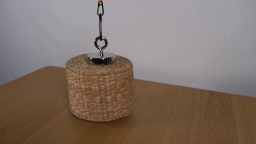
视觉工具实际返回图片 2
视觉工具实际返回图片 3
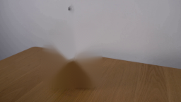
视觉工具实际返回图片 4
视觉工具实际返回图片 5
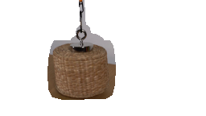
视觉工具实际返回图片 6
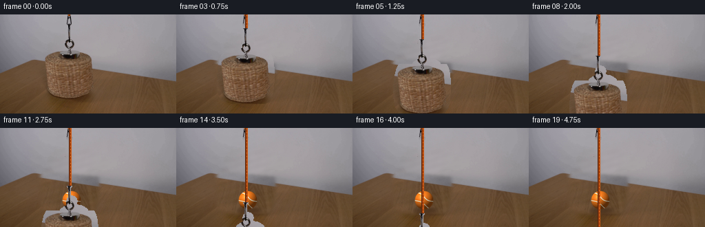
视觉工具实际返回图片 7
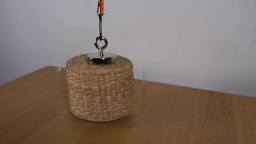
视觉工具实际返回图片 8
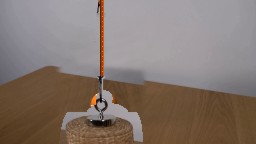
视觉工具实际返回图片 9
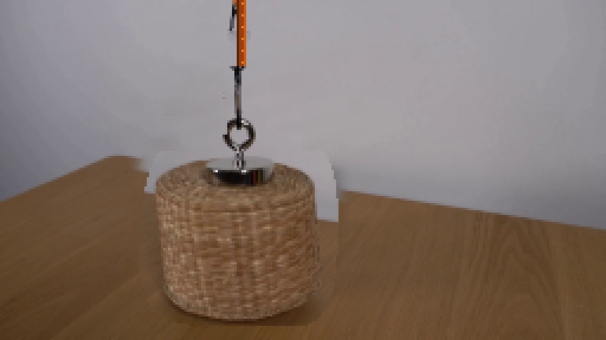
视觉工具实际返回图片 10
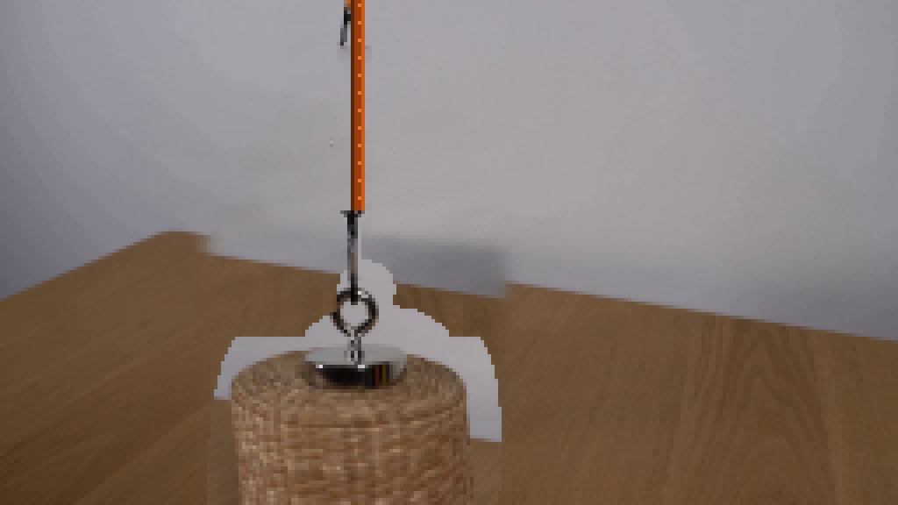
视觉工具实际返回图片 11
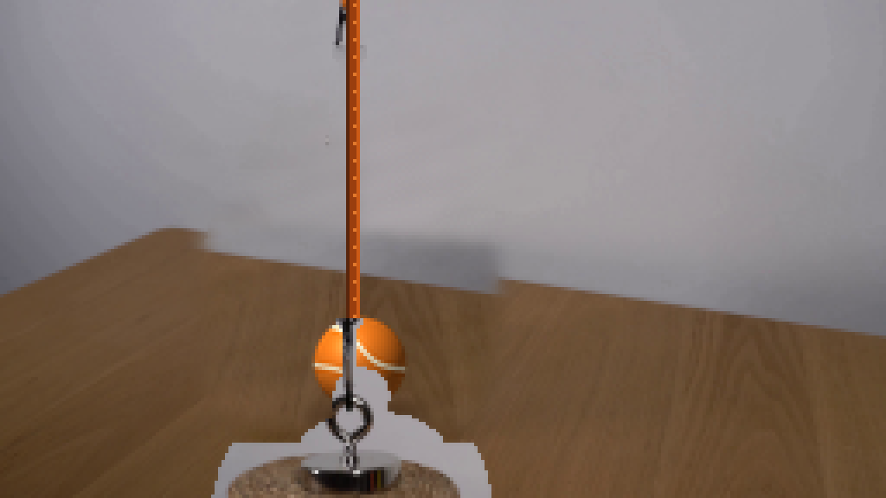
视觉工具实际返回图片 12
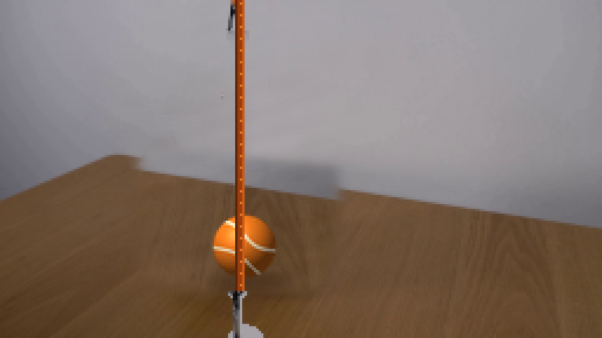
视觉工具实际返回图片 13

视觉工具实际返回图片 14
视觉工具实际返回图片 15
视觉工具实际返回图片 16
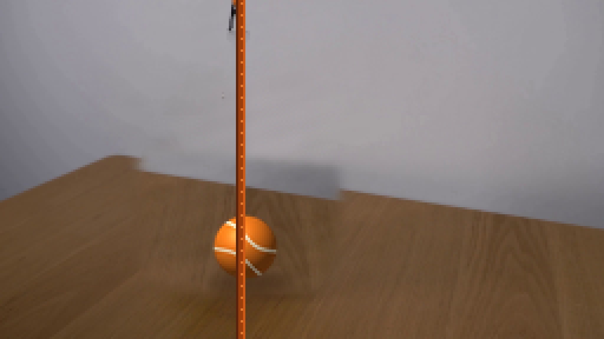
视觉工具实际返回图片 17
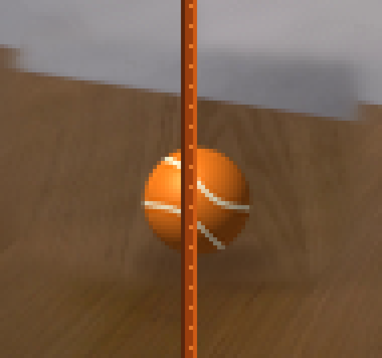
视觉工具实际返回图片 18
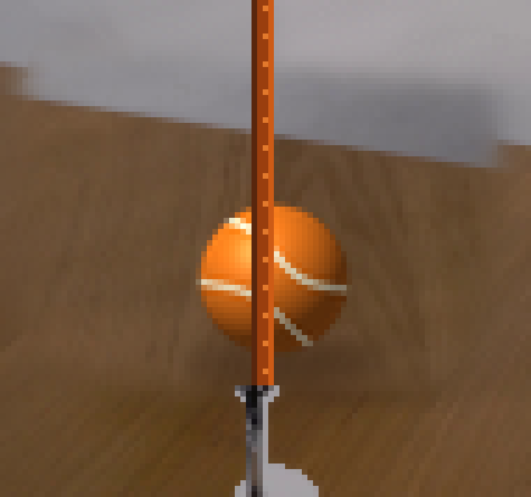
视觉工具实际返回图片 19
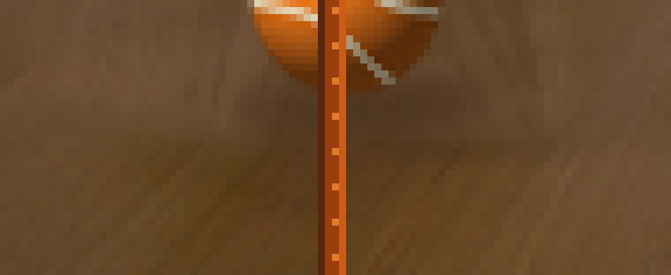
视觉工具实际返回图片 20

视觉工具实际返回图片 21
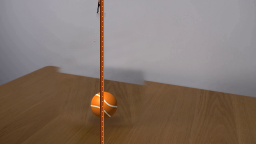
视觉工具实际返回图片 22
视觉工具实际返回图片 23
视觉工具实际返回图片 24
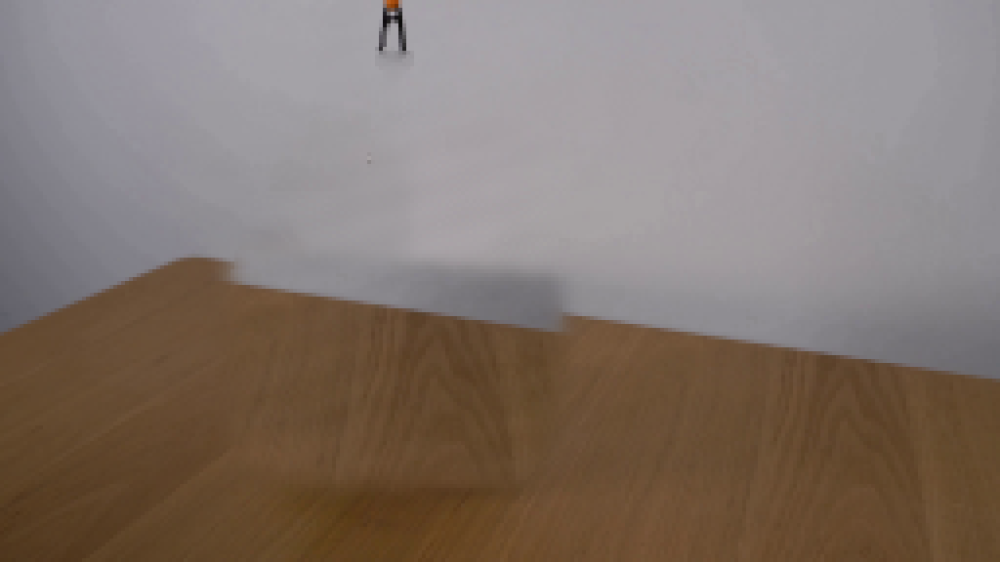
视觉工具实际返回图片 25

视觉工具实际返回图片 26

视觉工具实际返回图片 27
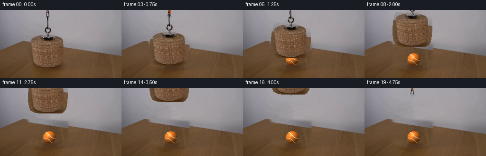
视觉工具实际返回图片 28
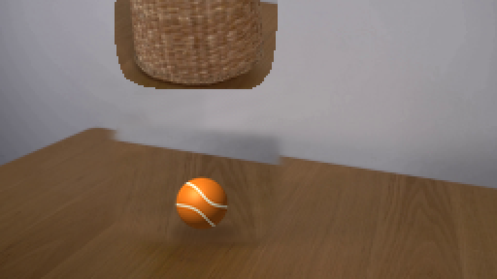
视觉工具实际返回图片 29
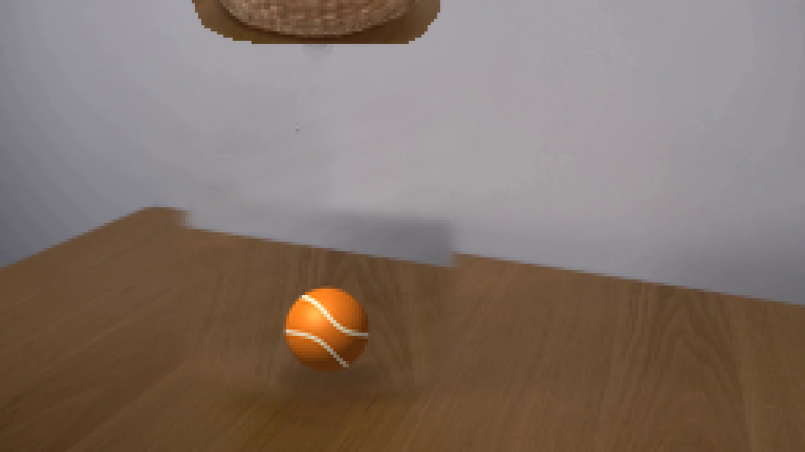
视觉工具实际返回图片 30
视觉工具实际返回图片 31
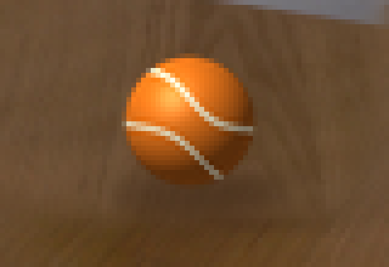
视觉工具实际返回图片 32
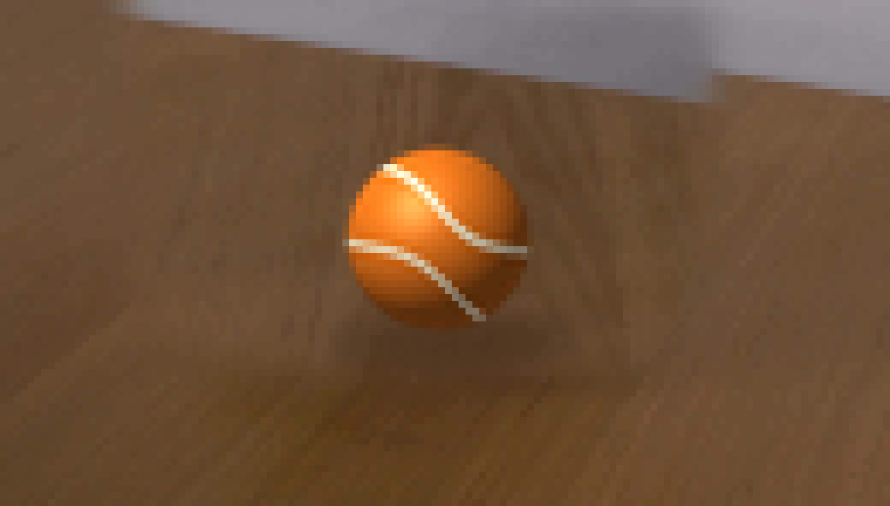
视觉工具实际返回图片 33
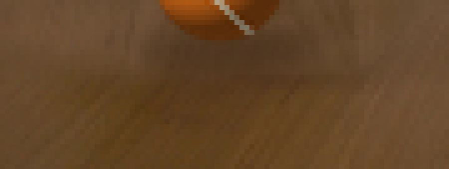
视觉工具实际返回图片 34
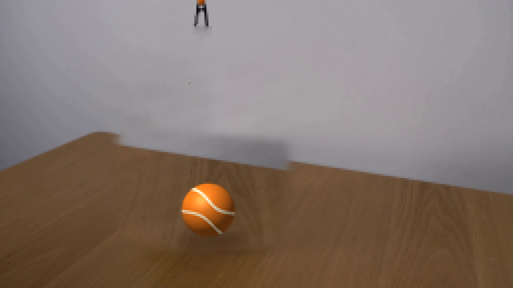
视觉工具实际返回图片 35
视觉工具实际返回图片 36
视觉工具实际返回图片 37
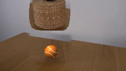
视觉工具实际返回图片 38
视觉工具实际返回图片 39

保存候选 5 份；完成命令 49 次；可验证图片返回 39 张。原始 API 响应与完整日志保留在本地。